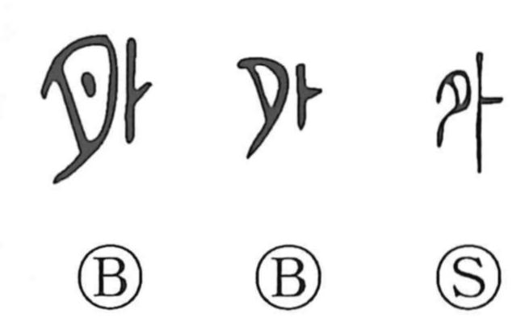

外

Kun: soto, hoka, hazusu, hazureru | On: gai, ge
outside ・ exterior ・ other ・ to remove
Explanation
外 combines 夕 with 卜, the sign for divination. Here 夕 concerns scraping away flesh. A turtle's flesh was removed so that its belly shell could be prepared for divination; the creature was described as having bone outside and flesh within.
The early writing belongs to that ritual vocabulary. Oracle-bone texts write the royal names later transmitted as 外丙 and 外壬 with 卜, confirming the connection with divination. The 夕-like form can also appear as 月 in references to cutting flesh.
外's familiar meaning is outside: the exterior, the surface, elsewhere, or something beyond a boundary.